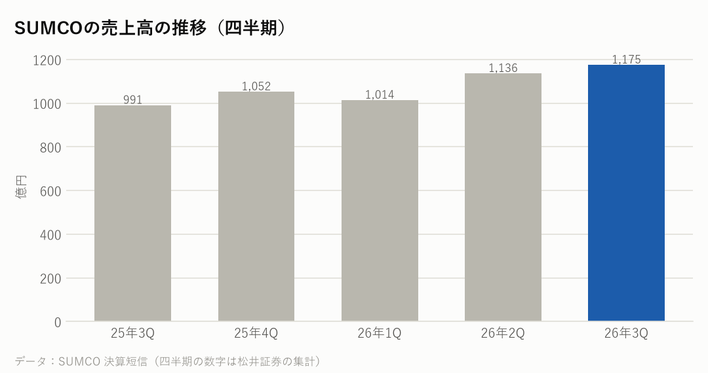
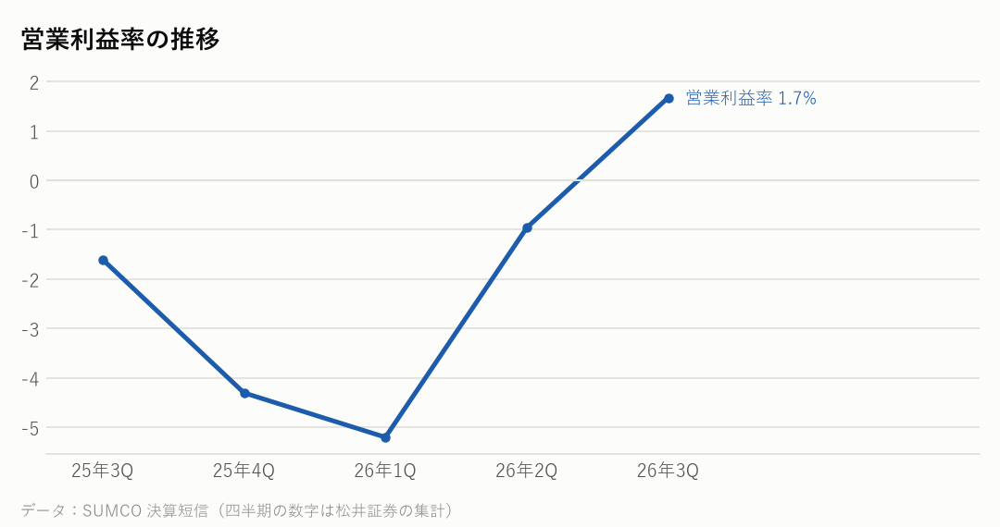

3436｜2026年7〜9月期の決算｜決算発表 2026年11月11日
SUMCOの決算：ウェハーは足りないのに、なぜもうからない？――重い減価償却と、すぐには上がらない値段
シリコンウェハーで世界2位のSUMCOの7〜9月期は、売上高が前年同期比19%増の1,175億円、営業利益は20億円で、前年同期の16億円の赤字から黒字になった。純利益は台湾の子会社FSTの株を一部売った利益などで55億円。会社は、AI向けの需要で300mmウェハーが「要求量に応えられない状況となりつつある」と説明した。ただ、通期では営業損益33億円の赤字を見込む。
主な数字（2026年7〜9月期）
| 今回 | 前年同期 | 前年比 | |
|---|---|---|---|
| 売上高 | 1,175億円 | 991億円 | +18.6% |
| 営業利益 | 20億円 | -16億円 | 黒字に転換 |
| 営業利益率 | 1.7% | -1.6% | |
| 純利益 | 55億円 | -41億円 | 黒字に転換 |
1〜9月の累計
| 項目 | 金額 | 前年同期比 |
|---|---|---|
| 売上高 | 3,325億円 | +9.2% |
| 営業損益 | 43億円の赤字（前年同期は58億円の黒字） | ― |
| 減価償却費 | 992億円（192億円増） | ― |

会社の見通し
| 10〜12月期の売上高 | 1,070億円（7〜9月期より105億円少ない） |
|---|---|
| 10〜12月期の営業利益 | 10億円 |
| 通期（2026年12月期）の売上高 | 4,395億円（前年比7.3%増） |
| 通期の営業損益 | 33億円の赤字 |
| 通期の純損益 | 34億円の赤字 |
- 10〜12月期の売上高は1,070億円の見通しで、7〜9月期より105億円少ない。台湾のFST（台勝科）が8月に連結子会社から外れた影響が含まれる（報道より）。
- 10〜12月期の営業利益は10億円の見通しで、市場予想（9億円の赤字）を上回った（報道より）。
- 長期契約（LTA）の価格は守られたと説明した。追加の需要には、顧客とのこれまでの関係と価格をもとに対応するとしている（報道より）。
もうけの力

同業のウェハーの会社と比べると
期間は2026年7〜9月（信越化学は4〜9月）。利益率は営業利益率。各社の決算資料・決算説明の報道から。通貨がそろわないので、伸び方と利益率で比べてください。
| 会社 | 売上高 | 前年比 | 利益率 |
|---|---|---|---|
| SUMCO | 1,175億円 | +18.6% | 1.7% |
| 信越化学※1 | 5,777億円 | +16% | 37.9% |
| GlobalWafers | 149億台湾ドル | −4.4%※2 | 9.8% |
| Siltronic | 3.55億ユーロ | +0.9%※2 | −11.9% |
GlobalWafers は台湾、Siltronic はドイツの会社。※1 信越化学工業の電子材料事業。ウェハーのほかフォトレジストなども入り、ウェハーだけの売上・利益は公表されていない（営業利益率は売上高と営業利益から計算）。※2 1〜9月の累計の前年比。Siltronic の利益率は EBIT から計算（減価償却前の利益率は22.9%）。韓国の SK Siltron は上場していないため載せていない。
NasdaqWhy の視点：データから読み取れる注目点
決算資料と各社の公式データを並べて読み取れることです。将来を予想するものではありません。
- 【なぜ需要が強いのにもうからないか】7〜9月期の減価償却費は330億円で、営業利益20億円の約16倍。過去に増やした工場の設備の費用が毎期重くのしかかっている。減価償却を足し戻した利益（EBITDA）は350億円あり、現金を生む力はある。
- 【なぜ値上げしないのか】会社は値上げをしたくないわけではない。8月の説明会で社長は「5%や10%の値上げでは全く追いつかない」と話し、今の価格では追加の注文に応じない考えを示していた（報道より）。それでも値段がすぐに上がらないのは、多くのウェハーが数年単位の長期契約（LTA）で決めた価格で売られているため。今回も「LTA価格は守られた」と説明しており、値上げが数字に表れるのは、新しい注文や契約の更新の分からになる。まだ分からないのは、顧客がどこまで高い値段を受け入れるか。
- 【なぜ増産しないか】会社は、今の販売価格と物価の上昇を考えると、増産の投資は経済的に合わないと説明した。決めても、生産能力が増えるまで数年かかるとしている（報道より）。
- SUMCOのシリコンウェハーの世界シェアは約20〜25%で世界2位とされる（公開情報をもとにした目安）。1位の信越化学工業（約25〜30%）と合わせて世界の半分前後を占め、台湾のGlobalWafers、ドイツのSiltronic、韓国のSK Siltronが続く。
- 【同業と比べると】利益率の差が大きい。信越化学の電子材料事業（ウェハーのほかフォトレジストなども含む）は営業利益率が37.9%、台湾のGlobalWafersは9.8%、SUMCOは1.7%、ドイツのSiltronicは営業赤字だった。ただし信越化学は、ウェハーだけの利益を公表していない。フォトレジストなどは一般に利益率が高い製品のため、ウェハーだけの利益率はこれより低い可能性があるが、どれだけかは分からない。値段の動きも分かれており、信越化学は契約の量を超える分などで値上げを交渉し、一部の顧客には10月から値上げした価格を使う。GlobalWafersは10〜12月期の出荷の多くがまだ古い長期契約などの価格で、平均の値段は2027年1〜3月期に上がる見込みとしている（各社の決算説明・報道より）。
- 営業損益は、この5四半期で初めて黒字になった（2025年7〜9月期から2026年4〜6月期までは赤字）。
- 1〜9月の設備投資は297億円で、前年同期の693億円から減った。借入金などの有利子負債は、2025年末の3,537億円から9月末に2,508億円まで減った。
- シリコンウェハーは半導体の土台になる材料で、サプライチェーンでは一番上流にあたる。ウェハーの不足は、製造装置や前工程の会社の動きに先がけて表れることがある。
次に確認したい決算・予定
- アプライド・マテリアルズの決算（日本時間11月13日朝）：半導体製造装置の受注の動き。
- 信越化学工業の決算（2027年1月27日の見込み）：同じシリコンウェハーの大手。
- SUMCOの次の決算（2027年2月の見込み）：ウェハーの価格と、増産の判断。
関連リンク
出典：SUMCO 決算短信・決算説明資料（2026年11月11日）を伝える報道（XenoSpectrum、Investing.com）、2026年8月の決算説明会の報道（BigGo ファイナンス）、世界シェアは公開情報をもとにした目安（semirai）。四半期の数字は松井証券の集計、信越化学工業 決算説明電話会議要旨（2026年10月27日）・決算説明会の報道（BigGo ファイナンス）、GlobalWafers・Siltronic の2026年7〜9月期決算の報道（Investing.com、Power Semiconductors Weekly）